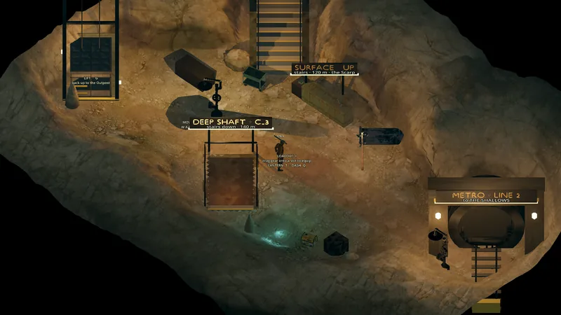

Ruta · Subterránea
The Threshold
Panorama
La primera caverna bajo el Outpost, al pie del Pozo 3: iluminada, tranquila, con instrucciones pintadas. El elevador vuelve a subir; el túnel al este lleva a The Shallows.


Tu primer viaje · paso 2/6Los carteles pintados enseñan movimiento, inventario, linterna y dash. El elevador del Pozo 3 sube al cielo abierto.
Salidas y conexiones
Un nivel debajo de The Outpost.
| Hacia | Tipo | Cartel de salida | Borde | Moto | Estado |
|---|---|---|---|---|---|
| The Shallows | Túnel · túnel | THE SHALLOWS | E | Se cruza montado | Jugable hoy |
| The Outpost | Elevador · Elevador del Pozo 3 | SHAFT 3 ELEVATOR · THE THRESHOLD | UP | Se cruza montado | Jugable hoy |
| The Scarp | Elevador · Elevador del Pozo 3 | SHAFT 3 ELEVATOR · THE THRESHOLD | UP | Se cruza montado | Jugable hoy |
Carteles que vas a leer
MOVEW A S DLOADOUT Idrag gear onto a slot to equip LANTERN T · DASH QSHAFT 3 ELEVATOR · Gscarp · outpost · thresholdTO THE SHALLOWSTO THE SHALLOWS
Lo mencionan
Hesk · Tamsin · Old Brannock · Rune
Ver también
The Shallows · The Outpost · The Scarp · Zonas · Mapa del mundo